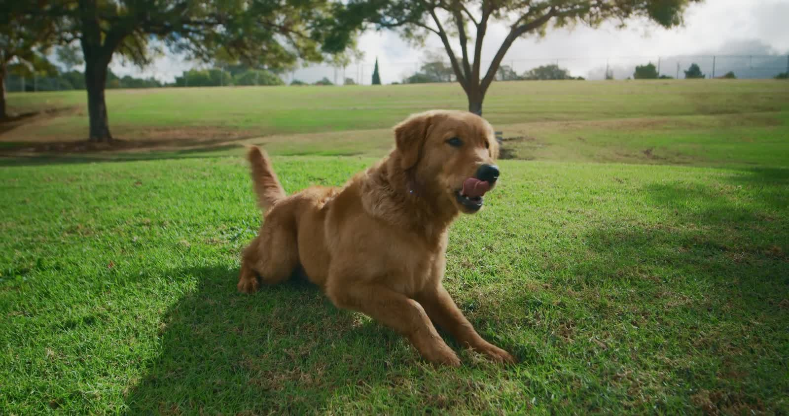
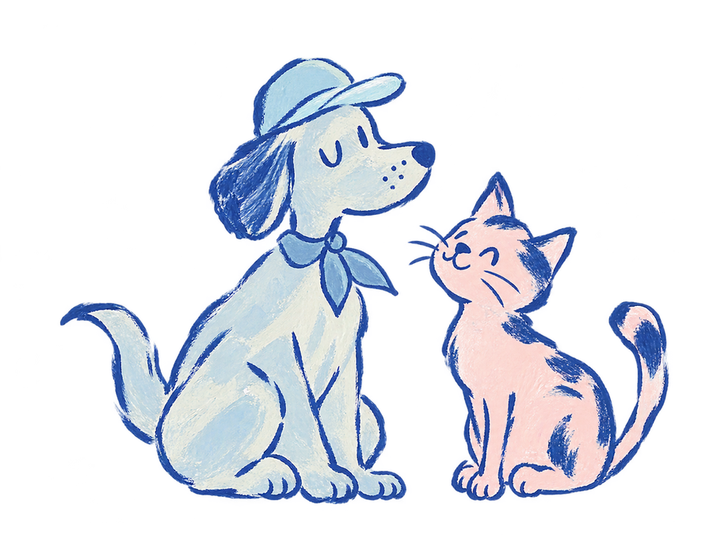
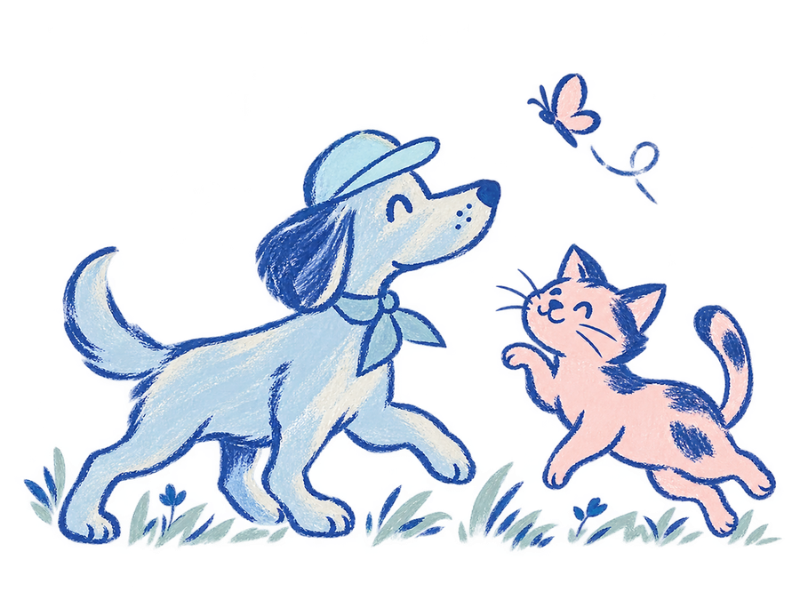

Wellness & Preventive Care
Annual exams, vaccines, and parasite prevention that catch the small things before they become big ones.

Family-Owned Veterinary Care · Byron, Georgia
At Hands of Hope Animal Hospital, best-medicine care meets a space built to calm your pet — and you.
Every room hand-painted by a local artist — a park you can visit any day.

The story in our name
Hands of Hope is named for our daughter, Hope. Her handprint lives inside our logo — the palmar crease left exactly as it is — beside the pets who shaped our family along the way.
Each of our four exam rooms carries the name of one of our four children. This was never just a practice to us. It's home, and from the moment you walk in, you're part of it.
“Privately owned and operated — focused on individualized, best-medicine care in a Fear Free environment.”
What we do
A full-service general practice in Byron, always reaching for more than the basics — so more of your pet's care can happen right here, with people who know them by name.
Annual exams, vaccines, and parasite prevention that catch the small things before they become big ones.
Advanced skin, ear, and allergy care led by Dr. John Hutchens — a dermatology-focused veterinarian and Zoetis speaker.
Cleanings, extractions, and the under-the-gumline problems that hide until they start to hurt.
Spays, neuters, and soft-tissue procedures with careful monitoring from anesthesia through recovery.
In-house imaging and lab work, including advanced ultrasound, for answers when time matters most.
A calm, low-stress visit every time — with acupuncture and integrative options when your pet needs another path.
Something you won't find anywhere else
Walk through our doors and you're standing in a park. A local artist hand-painted every room — soft skies, open fields, quiet corners — in a palette meant to slow your heartbeat, and your pet's.
People stop on the sidewalk just to look. We think a trip to the vet should feel exactly like this: calm, cared for, and a little bit like home.
The murals are the work of local artist Christy, a longtime friend of the practice — and every Christmas she paints a one-of-a-kind ornament for the year that hangs on our tree. [Artist details to confirm]
“People will just stand outside and look at the artwork, even when we're closed.”

The Hands of Hope difference
Decisions about your pet are made by the family who owns this practice — not a company chasing quotas.
Several doctors, each with their own strengths, so your pet always has the right person in the room.
Text us at (844) 786-1354 and reach someone on our team who actually knows you and your pet.
Meet the team
Dr. John Hutchens opened Hands of Hope — but he's far from alone. Our doctors each bring their own expertise, from dermatology and ultrasound to integrative care, so your pet always has the right hands.
Owner · DVM · Dermatology
Owner · Practice Leadership
DVM · Ultrasound & More
[Names & bios pending from client]Nurses · Techs · Care Team
In their words
“The most caring, compassionate vet we've ever been to. It truly feels like family the second you walk in the door.”
— Placeholder review“You can tell they genuinely love animals. Dr. Hutchens took his time and never made us feel rushed.”
— Placeholder review“The artwork on the walls is stunning, and the care matches it. Worth the drive from Perry every single time.”
— Placeholder review[DRAFT — replace with real, attributed Google & Facebook reviews before launch.]
Good to know
Yes — we'd love to meet you and your pet. Call us at (478) 336-1999 or request an appointment online, and we'll help you get scheduled with one of our doctors.
Absolutely. Text us at (844) 786-1354 during business hours and you'll reach a real member of our team through our practice software — perfect for quick questions and appointment requests.
When we're closed, we refer to the Middle Georgia Emergency Veterinary Center for after-hours and emergency care. If your pet needs urgent help outside our hours, please contact them directly.
Fear Free is a certified approach to reducing fear, anxiety, and stress during veterinary visits. Our team is Fear Free trained, so we take the time to keep your dog or cat calm and comfortable every step of the way.
We do. Hands of Hope cares for both dogs and cats, and our calm, home-like environment is designed to make even our feline patients feel at ease.
You'll find us at 6009 Watson Boulevard, Suite 430, Byron, Georgia 31008 — serving Byron, Perry, Warner Robins, and the surrounding Middle Georgia communities.